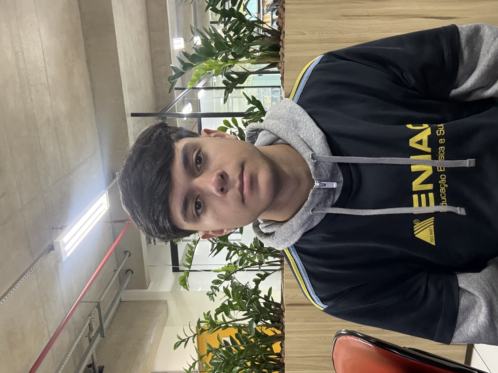

Sempre fui muito dedicado aos meus estudos e pratiquei esportes, como futebol e Muay Thai, o que me ensinou disciplina, trabalho em equipe e resiliência. Tenho facilidade em aprender e me adaptar a novas situações, e minha paixão por desafios me motivou a buscar uma transição para a área de TI.
Atualmente, busco adquirir conhecimentos técnicos sólidos, com foco especial em:
Busco construir uma carreira sólida e honesta, visando a estabilidade profissional para sustentar minha família. Meu foco é o aprendizado contínuo para assumir responsabilidades importantes e me tornar uma referência naquilo que faço, gerando valor real para a empresa onde eu estiver.